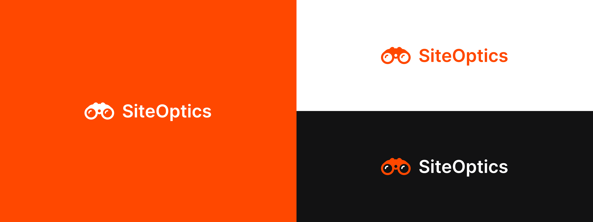
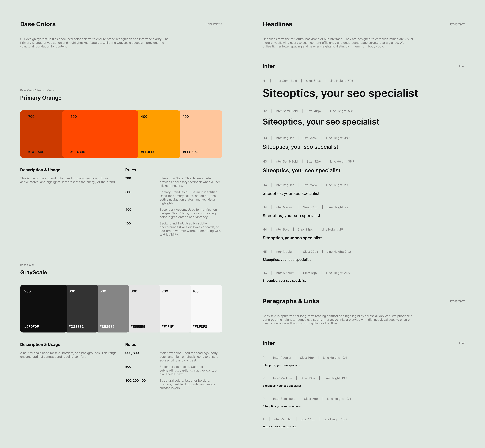
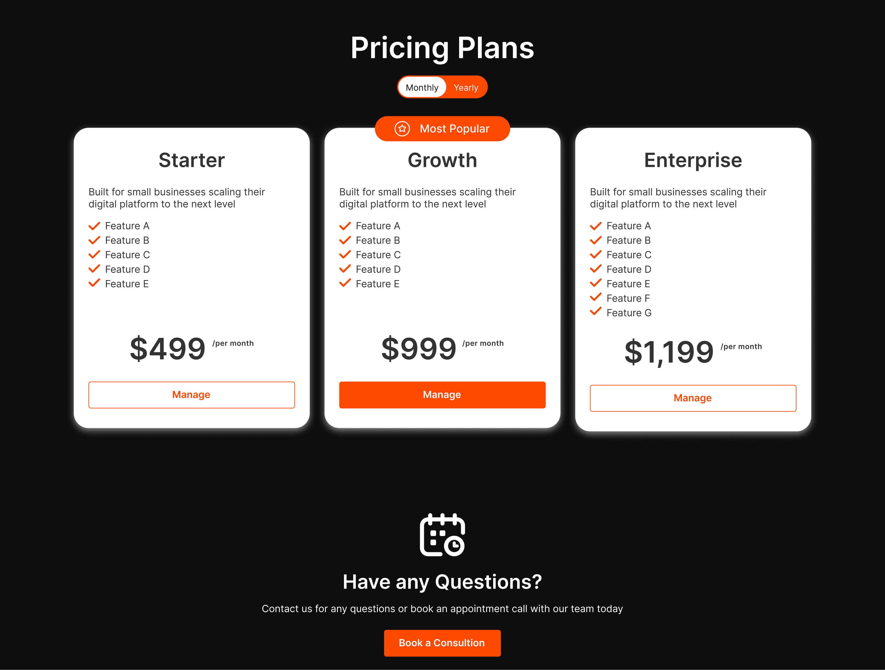
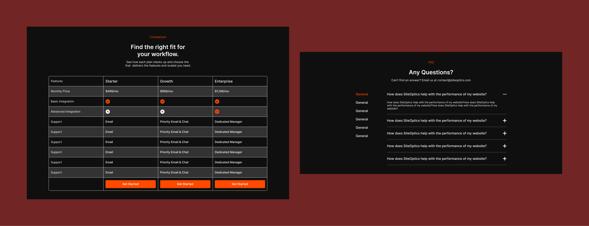
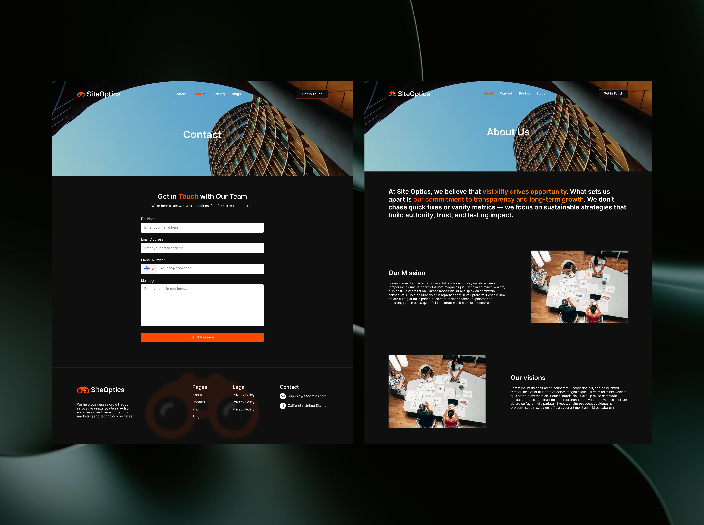

I designed a high-contrast dark theme that highlights the hero's value proposition and organizes services into a clean, tabbed layout. The flow ends with a pricing table that uses visual weight to naturally nudge users toward the middle 'Growth' plan.
Designed to capture the user's eye in seconds, the high-contrast layout leads them directly to the primary call to action.
Clear service categories paired with recognized industry logos instantly validate the agency's capabilities to the user.
Call for Quote. Transparent pricing signaling confidence and honesty to the business.
I designed the hero section to establish immediate authority. Using the dark mode aesthetic reduces eye strain and allows the primary orange accents to direct the user's attention instantly to the primary CTA. The bold typography ensures the value proposition "Top Search" is the first element read.
Services & Tech Stack
I intentionally bracketed the core services with two layers of validation. The top row 'Platforms we specialize in' confirms compatibility with the client's existing stack. The bottom row 'Technology we use' signals professional capability.
I implemented a tabbed navigation system to eliminate the wall of texts. It organizes five distinct sections into a single, interactive container. This keeps the page length manageable and puts the user in control of what they want to read.
Secondary Conversion
I designed the pricing table to drive users toward the middle tier. By giving the 'Growth plan' more visual weight, I created a focal point.
However, not every user is ready to purchase the subscription immediately. The 'Have any Questions?' section serves as a safety net, providing the same primary CTA from the hero section

Digging deep into the reason 'Why'
The comparison table allows users to verify specific feature availability line by line, removing ambiguity and friction throughout the process of purchasing the service.
The accordion FAQ acts as a safety net, providing common friction points after addressing the price options to prevent users from leaving the page to search for answers.

